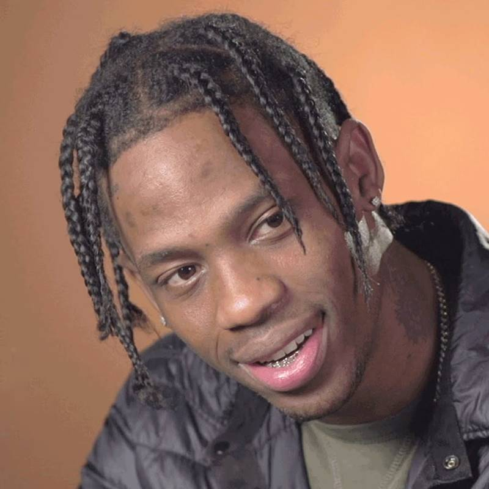

30,557,197 Monthly Listeners

Travis Scott
About Artist
A Houston-born hip-hop artist and producer affiliated with Kanye West's GOOD Music and T.I.'s Grand Hustle, Travis Scott became known during the early 2010s for his heavily Auto-Tuned half-sung/half-rapped vocal style. Within seven years of his mainstream arrival via West's Cruel Summer compilation (2012), on which he served as co-producer and featured artist, Scott attained numerous platinum singles as a lead artist, including a streak of four that began with "Antidote," a single off his number three hit debut album, Rodeo (2015). Scott followed with a pair of number one full-lengths, Birds in the Trap Sing McKnight (2016) and Astroworld (2018), all the while assisting in platinum singles headlined by the likes of Rihanna ("Bitch Better Have My Money"), SZA ("Love Galore"), and Drake ("Portland"), and working extensively with Quavo as Huncho Jack. Whether leading or supporting, Scott's presence was unmistakable, almost always colored with an array of ad-lib trills including but not limited to "It's lit," "Yeah, yeah," and "Straight up."
Born Jacques Webster, Travis Scott grew up in a suburb of Houston and began making music as a teenager. He formed a duo called the Graduates with Chris Holloway, and they released an EP in 2009. The following year he formed another duo, the Classmates, with OG Chess. Scott produced the duo's two full-lengths, Buddy Rich and Cruis'n USA, but they broke up near the end of 2011. After dropping out of college, Scott moved to Los Angeles and began recording music on his own. He met T.I. and eventually Kanye West. Scott was hired as an in-house producer for GOOD Music, and appeared on the label's Cruel Summer compilation in 2012. Scott's debut, Owl Pharaoh, was originally scheduled to be released as a free mixtape in 2012, but as his profile grew (including a placement in XXL Magazine's Freshman Class of 2013), and sample clearance issues, the album wasn't released until May of 2013. Featuring guest appearances by T.I. and 2 Chainz (on the single "Upper Echelon") as well as Toro y Moi and Justin Vernon of Bon Iver, the mixtape eventually garnered a nomination for Best Mixtape at the 2013 BET Hip Hop Awards.
The buildup to Scott's first proper studio album involved the Days Before Rodeo mixtape, promoted with the singles "Don't Play" and "Mamacita," and the March 2015 U.S. Rodeo Tour, for which Scott headlined, supported by Young Thug and Metro Boomin. Several of the dates sold out. During the same month, Rihanna's Scott-produced hit single "Bitch Better Have My Money" was released. "3500" and "Antidote" were released ahead of Rodeo, Scott's second full-length, which followed in September on Grand Hustle/Epic and debuted at number three on the Billboard 200. Toward the end of the year, "Antidote" peaked at number 16 on the Hot 100 and became Scott's first platinum single.
Chatter regarding a follow-up, along with numerous delays, ensued throughout much of 2016. Meanwhile, Scott extended his commercial presence with featured spots on Wiz Khalifa's "Bake Sale," Rihanna's "Woo," and Kanye West's "FML," as well as a collaboration with Young Thug and Quavo, "Pick Up the Phone," a midyear hit issued as the lead single of Young Thug's JEFFERY. Three months later, after "Bitch Better Have My Money" earned a platinum certification, Scott's second proper album arrived. Titled Birds in the Trap Sing McKnight after one of Quavo's lines in "Pick Up the Phone," the woozy, mostly midtempo set featured that hit and contributions from the likes of André 3000, Kid Cudi, and Kendrick Lamar. It went straight to the top of the Billboard 200.
Leading up to his third LP, Scott was featured on a slew of tracks, including platinum singles headlined by SZA ("Love Galore"), Drake ("Portland"), Miguel ("Sky Walker"), 2 Chainz ("4 AM)," and Trippie Redd ("Dark Knight Dummo"). Scott's own "Butterfly Effect" arrived during this torrent of hits in May 2017 and promptly went platinum as well. Seven months later, Huncho Jack, Jack Huncho, a collaborative full-length with Quavo, entered the Billboard 200 at number three. The following May, Scott released "Watch," a non-album track featuring Kanye West and Lil Uzi Vert, and within three months released Astroworld, which he considered the true follow-up to Rodeo. Featuring "Butterfly Effect," the album -- named after a demolished Houston amusement park -- debuted at number one and was supported with a second single, "Sicko Mode." ~ Paul Simpson & Andy Kellman